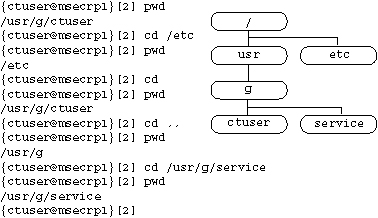

Operating Documentation
Direction 5114045-800, Rev# 10
LightSpeed 4.X Service Information (Advanced)
Operating Documentation |
| Last Revised on: | October 12, 2004 |
This module contains the following:
Section 1 - Unix Commands (Summary)
Section 2 - Unix Commands (Detailed Examples)
Section 3 - Unix Reference Books
Use this command when you are done, always.
Gives a brief overview of where to go for help.
Change directory.
Print working directory (the directory you are in).
Make a new directory.
List files.
Lists all files in the directory, including hidden files. A hidden file is one whose name starts with a period (.).
Copy a file.
View a text file.
Prints the contents of a file on the screen.
Display the contents of a file, pausing between each screen full. Type more file.
Pressing the control key and the d key at the same time interrupts programs and returns you to the prompt.
Displays the current date and time.
Displays amount of disk space in 512byte blocks ('du -s' gives the summary for a directory).
Displays disk limits and amount currently in use.
Display running processes ('ps -ef | grep username' gives all the processes owned by a particular user).
Display who is on and where they are on from.
Display time, number of users, and load averages.
Displays user logged on to the system and directories.
Open a remote session with host.
Open a remote session with host.
File Transfer Protocol: send and receive files between machines.
Check to make sure a remote machine is reachable.
Visual Editor.
Searches a file for a pattern.
This provides examples of some of the most commonly used UNIX commands.
Displays the Present Working Directory. PWD shows your current location in the filesystem’s directory structure.
{ctuser@msecrp1}[2] pwd<Enter>
/usr/g/ctuser
{ctuser@msecrp1}[3]Notice that the user name for who is logged in and the name of the computer are shown in braces {} and the command line number is in brackets [].
To move to the location of a specific file, you change directory, either by entering the absolute address of the directory or by entering its relative address.
The absolute address specifies where it is from the root directory, and always starts with the /. This tells the shell to start at the top and go down. For example, to change to the /etc directory, simply type "cd /etc" on the command line and press <Enter>.
To return to your home directory, just type cd without specifying a directory.
Relative addressing uses the current working directory. To go up one directory, simply specify the parent directory as .. (also known as a double dot).
Subdirectory names are also separated by the / delimiter. UNIX reads from left to right, so only when / is the first character in a cd command string will this be read as the root directory.
Illustration 1: Directory Structure using the ls command

To list all the file names in a directory, you use the ls command. Entering an ls command alone (e.g. without any options):
Displays a list of all the file names and subdirectories in the current directory.
Gives you no information about the size or access control fields for each file.
| NOTE: | Some files have "s" for the 4th character (i.e., super user id bit on). |
{ctuser@msecrp1}[3] ls<Enter>
LcHostFile denta.tar.Z* install/
MEDAPPS.VERSION* film/ logfiles/
Prefs/ get_ivi_key* messages/
QA.tar.Z get_sdc_key* nav.tar.gz*
SMPTE.tar get_vxtl_key* scripts/
app-defaults/ gunzip.Z* set_start_vox.edit
bin/ image_comb/ vxtl/
catalog_message_sdc/ imcomb.tar.Z* vxtl.tar.Z*
{ctuser@msecrp1}[4]Some commands have extensions or options that add functionality to the command. These extensions are sometimes called "flags" or "switches." Options are unique to each command. For example, the -al option lists files output in long format. That means the file list contains detailed information about every aspect of the file in the directory.
{ctuser@msecrp1}[4] ls -al<Enter>
total 12173
drwxrwxr-x 12 ctuser informix 1024 Feb 10 06:02 ./
drwxr-xr-x 22 ctuser informix 512 Feb 6 10:24 ../
-rw-r--r-- 1 root sys 9313 Feb 6 10:24 .4Dwmrc
-rwxr-xr-x 1 ctuser ctuser 15319 Feb 6 10:25 .SdCrc*
-rw-r--r-- 1 root sys 159 Feb 6 16:42 .Xdefaults
......
......
drwxr-xr-x 2 ctuser informix 1024 Feb 6 16:35 scripts/
-rw-r--r-- 1 ctuser ctuser 68 Feb 7 1996 set_start_vox.edit
drwxrwxrwx 8 ctuser ctuser 512 Feb 6 16:42 vxtl/
-rwxr-xr-x 1 ctuser informix 2284893 Feb 6 16:30 vxtl.tar.Z*
{ctuser@msecrp1}[5]In the above list:
The first 10 fields on each line indicate ownership and access privileges. The first character shows if it's a regular file (-) or directory (d).
Next comes the owner access: r is Read, w is Write, and x is eXecute. If the "flag" is turned on, then each field position will show rwx.
The next 3 positions are for the group; all the users who are in the same group as this user’s primary group will have access according to the rwx.
The last 3 characters are for all other users on this system, not the owner or members of the group.
Consider this line from the above listing:
-rwxr-xr-x 1 ctuser ctuser 15319 Feb 6 10:25 .SdCrc*
Reading from right to left, note that the current directory holds a file named .SdCrc. The last time that file's contents were modified (10:25 AM on February 6) is next. The file contains 15319 bytes.
The owner (user) of the file belongs to the group ctuser. The owner of the file is ctuser. The number (in this case, 1) indicates the number of links to this file. Finally, the dash and letters indicate which user, group, and others have permissions to read, write, and execute this file.
Two special files are used particularly when we change directories or want to run a program. The dot (.) directory is the current directory, the one you are in right now. Sometimes the name of a program is found in many different directories. To specify that you want to run a file in the present working directory, use the dot.
To see the amount of free space on the Operator Console system disk, use the command df, or df -k (with the option -k). All reporting is in standard 1024-sized blocks and kilobytes. Examine the column for %use. It should generally not exceed 95%. If it reaches 100%, then only the root user is allowed to save any more data in that partition.
{ctuser@msecrp1}[2] df -k<Enter>
Filesystem Type kbytes use avail %use Mounted on
/dev/root efs 92884 12688 80196 14% /
/dev/usr efs 499521 461314 38207 92% /usr
/dev/dsk/dks1d1s3 efs 308076 30847 277229 10% /data
/dev/dsk/dks1d1s7 efs 723975 370081 353894 51% /usr/g
/dev/dsk/dks1d1s5 efs 1997002 15698 1981304 1% /usr/g/sdc_image_pool
{ctuser@msecrp1}[3]When UNIX itself, or any program running on the system crashes, large core files remain, They should be removed. To remove files and directories, use the command rm. As root user, any file on the system can be deleted.
| NOTE: | When using the rm command:
|
Core files are normally found in the /usr/g/service/log/crashdumps directory. Here are the commands to access and display what could appear after a UNIX crash.
{ctuser@msecrp1}[8] pwd<Enter>
/usr/g/service/log/crashdumps
{ctuser@msecrp1}[9] ls -al<Enter>
total 247126
drwxr-xr-x 2 root sys 512 Feb 21 16:22 ./
drwxr-xr-x 3 ctuser ctuser 512 Feb 21 16:22 ../
-rw-r--r-- 1 root sys 104 Feb 20 14:59 README
-rw-r--r-- 1 root sys 1844 Feb 20 20:30 analysis.0
-rw-r--r-- 1 root sys 2 Feb 21 16:21 bounds
-rw-r--r-- 1 root sys 1807 Feb 20 20:30 crashlog.0
-rw-r--r-- 1 root sys 9 Feb 20 14:59 minfree
-rw-r--r-- 1 root sys 108 Feb 20 20:30 summary.0
-rw-r--r-- 1 root sys 108 Feb 21 16:22 summary.1
-rw------- 1 root sys 3366640 Feb 20 20:30 unix.0
-rw------- 1 root sys 3366640 Feb 21 16:21 unix.1
-rw------- 1 root sys 3268608 Feb 20 20:30 vmcore.0.comp
-rw------- 1 root sys 116514816 Feb 21 16:21 vmcore.1.comp
{ctuser@msecrp1}[10] All the files are owned by the root user, so you must enter su - before you can delete files. All files in this directory can be removed to free up space. The first crash happened on February 20th and the last crash was on February 21st. Below is the sequence for cleaning up after the crash. Notice the amount of free space recovered in the /usr/g partition.
{ctuser@msecrp1}[11] su -<Enter>
Password:
msecrp1 1# pwd<Enter>
/
msecrp1 2# cd /usr/g/service/log/crashdumps<Enter>
msecrp1 3# ls -al<Enter>
total 247126 drwxr-xr-x 2 root sys 512 Feb 21 16:22 ./ drwxr-xr-x 3 ctuser ctuser 512 Feb 21 16:22 ../ -rw-r--r-- 1 root sys 104 Feb 20 14:59 README -rw-r--r-- 1 root sys 1844 Feb 20 20:30 analysis.0 -rw-r--r-- 1 root sys 1565 Feb 21 16:22 analysis.1 -rw-r--r-- 1 root sys 2 Feb 21 16:21 bounds -rw-r--r-- 1 root sys 1807 Feb 20 20:30 crashlog.0 -rw-r--r-- 1 root sys 1447 Feb 21 16:20 crashlog.1 -rw-r--r-- 1 root sys 9 Feb 20 14:59 minfree -rw-r--r-- 1 root sys 108 Feb 20 20:30 summary.0 -rw-r--r-- 1 root sys 108 Feb 21 16:22 summary.1 -rw------- 1 root sys 3366640 Feb 20 20:30 unix.0 -rw------- 1 root sys 3366640 Feb 21 16:21 unix.1 -rw------- 1 root sys 3268608 Feb 20 20:30 vmcore.0.comp -rw------- 1 root sys 16514816 Feb 21 16:21 vmcore.1.comp
msecrp1 4# df -k<Enter>
Filesystem Type kbytes use avail %use Mounted on /dev/root efs 92884 12693 80191 14% / /dev/usr efs 499521 462224 37297 93% /usr /dev/dsk/dks1d1s3 efs 308076 21594 286482 7% /data /dev/dsk/dks1d1s7 efs 723975 505569 218406 70% /usr/g /dev/dsk/dks1d1s5 efs 1997002 57190 1939812 3% /usr/g/sdc_image_ool
msecrp1 5# rm *<Enter>
msecrp1 6# df -k<Enter>
Filesystem Type kbytes use avail %use Mounted on /dev/root efs 92884 12693 80191 14% / /dev/usr efs 499521 462224 37297 93% /usr /dev/dsk/dks1d1s3 efs 308076 21594 286482 7% /data /dev/dsk/dks1d1s7 efs 723975 381996 341979 53% /usr/g /dev/dsk/dks1d1s5 efs 1997002 57190 1939812 3% /usr/g/sdc_image_ool msecrp1 7#
In the sample command above, you see the numbers in the brackets [] increment. This is the history function, which remembers what you have typed before. You can repeat any command from the history list with the ! or "bang" command. To repeat the last command, use the !! or "bang bang." The history function is reset every time you log out. Here is short example, where the history numbers are shown in [brackets].
{ctuser@msecrp1}[1] pwd<Enter>
/usr/g/ctuser
{ctuser@msecrp1}[2] cd /etc<Enter>
{ctuser@msecrp1}[3] cd<Enter>
{ctuser@msecrp1}[4] history<Enter>
1 pwd 2 cd /etc 3 cd 4 history
{ctuser@msecrp1}[5] !2<Enter>
cd /etc
{ctuser@msecrp1}[6]To display the contents of a text file one page at a time, use the more command. Most files with the Read flag set are text files. If you have the access privilege, you can view them. There is an INFO file on the CT system that lists most of the system-specific settings. It's a long file, so here is a short excerpt. The more command displays one page at a time, then prints more % in the bottom left corner of the screen. When you press the <Enter> key, you get one more line displayed. To get the next full screen, press the <Space Bar>. The file used in this example is located in the directory /usr/g/config.
{ctuser@msecrp1}[33] more /usr/g/config/INFO<Enter>
setenv DICOM_ADDRESS GENNET_SuiteID
setenv HOSPITAL_NAME "G.E. Medical Systems"
.............
.............
more 47%
setenv SERVID $GATEWAY_HOSTNAME
setenv tubeType $TUBETYPE
setenv REGEN no
{ctuser@msecrp1}[34]Most commands send their result or output to the terminal screen, and expect input from the keyboard. You can instruct the shell to redirect the input or output to somewhere else. For example, you could save the output to a file or send it to a printer. One great feature is to take the output from one utility, or command, and send it as input to another command. This is the job of the pipe. You separate each command with the |. This forces all the outputs from the command on the left to be sent as input to the command on the right. For instance, the list command ls -al often scrolls off the top of the screen. You can prevent this by redirecting it to the more command, and you will get one page at a time.
Here is the command syntax and a short excerpt. Note we have defined the screen as 4 lines long.
{ctuser@msecrp1}[2] ls -al | more<Enter>
total 12177
drwxrwxr-x 13 ctuser informix 1024 Feb 11 02:42 ./
drwxr-xr-x 22 ctuser informix 512 Feb 6 10:24 ../
-rw-r--r-- 1 root sys 9313 Feb 6 10:24 .4Dwmrc
-rw-rw-rw- 1 ctuser ctuser 170 Feb 6 10:25 .config_file
-More--
-rwxr-xr-x 1 ctuser ctuser 4501 Feb 6 16:35 .cshrc*
drwxr-xr-x 3 ctuser informix 512 Feb 6 10:27 .desktop-msecrp1/
-r--r--r-- 1 ctuser ctuser 1189321 Feb 6 16:35 QA.tar.Z
-rwxr-xr-x 1 ctuser informix 14248 Feb 6 16:30 get_sdc_key*
--More--
-rwxr-xr-x 1 ctuser informix 14248 Feb 6 16:30 get_vxtl_key*
-rwxr-xr-x 1 ctuser informix 72969 Feb 6 16:30 gunzip.Z*
-rwxr-xr-x 1 ctuser informix 2284893 Feb 6 16:30 vxtl.tar.Z*
{ctuser@msecrp1}[3]When you need to find "the needle in the hay stack," use the find command. You can use this command to find many different parameters, such as files by name or user id. To obtain the best results from the find command, you must describe what you want quite explicitly. For example, to find the Suite.cfg file, enter the command shown on the first line below:
{ctuser@msecrp1}[6] find / -name Suite.cfg -print<Enter>
Cannot chdir to /usr/g/sdc_image_pool/lost+found
Permission denied
/usr/g/config/Suite.cfg
Cannot chdir to /data/lost+found
Permission denied
{ctuser@msecrp1}[7]Here you specify where to start the search, in this case the / or root directory. Then you specify what to look for, in this case it's a file by name -name, followed by the specific name to look for: Suite.cfg. Finally, you tell the find command that you want the result printed to the screen; that is the -print.
| NOTE: | In the above example, the results indicate that you are not allowed into several directories, because the user id of ctuser has no access privilege. |
Often you can find the file, but it has hundreds of lines of text in it. You are probably interested only in specific aspects, such as memory problems in an error log or DAS type in the configuration file. Here the grep command comes in handy. It goes through one or more files, line by line, and displays only the lines containing the specific word you specify. The grep command shows only what you want to see, and removes everything else.
For example, assume you want to see if IRIX has had any panics lately. You can "grep panic" from the error log. Here is the command and its result:
{ctuser@msecrp1}[5] grep panic /var/adm/SYSLOG<Enter>
Feb 25 11:17:28 2E:msecrp2 savecore: reboot after panic: <0>PANIC: IRIX Killed due to Bus Error
{ctuser@msecrp2}[6]If you want to see all the memory problems from all the system error logs, then you could use the wild card, or the * to read all the files, like this:
{ctuser@msecrp1}[7] grep Memory /var/adm/SYSLO*<Enter>
Jan 26 10:22:35 2E:ct02 savecore: reboot after panic: <0>PANIC: IRIX Killed due to Memory Error Jan 26 10:22:35 2E:ct02 unix: Memory Parity Error in SIMM S8 Jan 27 12:10:45 2E: ct02 unix: Memory Parity Error in SIMM S8
The user of the root account is often referred to as the Super User. You can get access and ownership of everything on the disk by changing to the super user in a shell, if you are already logged in as ctuser. You do this by issuing the command su - (switch user) and then supply the correct password for the root account. You can also logout as ’ctuser’ and then login as ’root’. The main difference is the direct login gives you a different user environment. You have to do this when you want to delete core files and for many system maintenance tasks.
| NOTE: | You will be logged in to the root's home account, so be careful! |
login: ctuser<Enter>
Password: IRIX Release 5.3 IP22 msecrp1 Copyright 1987-1996 Silicon Graphics, Inc. All Rights Reserved. Last login: Wed Feb 12 05:20:32 CST 1997 by UNKNOWN@3.231.44.107
{ctuser@msecrp1}[1] su -<Enter>
Password:
msecrp1 1# pwd<Enter>
/ msecrp1 2#
UNIX is a multi-user, multiprocessing system. Every time someone starts a new routine, the kernel starts a new process and gives it a unique process id. This is a number that is incremented for every new process. Process number 1 is the kernel scheduler itself. You can see your processes with the ps command. To see all the processes that are currently running, use the option/flag -ef on SGI.
{ctuser@msecrp1}[18] ps<Enter>
PID TTY TIME COMD
633 ttyq0 0:00 csh
782 ttyq0 0:00 csh
1118 ttyq0 0:00 ps
{ctuser@msecrp1}[19]This example shows the ctuser has a process number 633, which is the c-shell we used to login with. In this example we have a 2nd shell with process id 782, which is in the background. Process id 1118 is the ps command we activated.
In the example above, we have two c-shell processes. Anytime you have a program or process that does not work properly, first try to terminate it in the normal mode. Only if this does not work should you use the kill command to terminate it. Here we will terminate the 2nd c-shell. The kill command has several flags; -15 tries to terminate any child processes the main process has started first, before terminating the main process you specify.
{ctuser@msecrp1}[20] kill -15 782<Enter>
{ctuser@msecrp1}[21] ps<Enter>
| NOTE: | You should be very careful with the kill command. You have no guarantee that all the child processes are closed and the data is saved to the disk, but it's better than just turning off the power. If any child process is "hung" then the -15 flag waits forever. You can issue a sure kill with the -9 flag, which does not wait for the children to close first. |
All the manuals are on the system. You can read them with the man command. First become the root user or su to get the correct path in the environment variables. The man pages can sometimes be too detailed, but they are the ultimate source of information. Here is the “man” page for the df command.
{ctuser@msecrp1}[3] su -<Enter>
Password:
msecrp1 1# man df<Enter>
df - report number of free disk blocks
df [ -b ] [ -f ] [ -i ] [ -k ] [ -l ] [ file-system ...]
df reports the number of total, used, and available disk blocks (one disk block equals 512 bytes) in file systems. The file-system argument may name a device special file containing a disk filesystem, a mounted NFS filesystem of the form hostname:pathname, or any file, directory, or special node in a mounted filesystem. If no file-system arguments are specified, df reports on all mounted file systems.
The -b flag causes df to report usage in 512-byte units, which is the default.
The -f flag forces a scan of the free block list.
The -i flag reports the number and percentage of used inodes and the number of free inodes.
The -k flag causes df to report usage in 1024-byte units. Normally, the free block information is gleaned from the file system's superblock.
The -l flag restricts the report to local disk filesystems only.
The -q and -t flags are recognized but ignored. They are provided for compatibility with previous releases.
To report usage in the root filesystem, use either of the following:
df /dev/root
df /
Report on the file system containing the current directory:
df .
/etc/mtab
statfs(2), fs(4), mntent(4)
Free counts may be incorrect, with or without the -f flag. If file-system names an NFS file in a filesystem exported with the -nohide option on the server (see exportfs(1M)), and the client mounts an ancestor of that filesystem, then df will report incorrect information.
In previous IRIX releases, usage was reported in 1024-byte units. The proc file system (normally mounted under /proc) is not printed by default, but may be explicitly specified. This filesystem consumes no actual disk space, but is an interface to the virtual space of running processes. The total and free blocks reported represent the total virtual memory (real memory plus swap space) present and the amount currently free, respectively.
The -i option applied to filesystems of type NFS reports a free inodecount of 0. Future versions of NFS will support useful inode counts. For the proc filesystem type, -i reports the number of active process slots in the iuse column, and reports the number of available slots in the ifree column.
msecrp1 2#
Before you can change any nvram parameter, you must be logged-in as root (S4-).
In a UNIX shell, to display all nvram parameter settings, type:
{ctuser@msecrp1}[2] nvram<Enter>
To modify a nvram parameter, type a command similar to the following example:
{ctuser@msecrp1}[3] nvram -v console g<Enter>
Learning the VI Editor - a book to teach you how to use the standard text editor for all Unix systems.
Learning UNIX Operating System -- by Jerry D. Peek